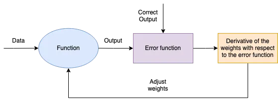

Neural network: The universal function
Have you ever imagined a single machine that can adapt to any role given to it? It could be a screw, a tire, a screen or any other task you could think of. That’s what a neural network is for software — a function that can perform any task.
Initially, when I learned about neural networks, it seemed like a highly abstract concept that emulated the brain. However, after reading books such as Deep Learning by Ian Goodfellow and The Deep Learning practical coder by Jeremy Howard, I came to realize that a neural network is nothing more than a function that can be adjusted to perform any task we require of it.
What exactly is a function?
A function is a mapping of an input to an output. For instance, an addition function could take two numbers as inputs and output their sum.
Adjustable function
An adjustable function, on the other hand, is a function that has weights or parameters that regulate how the inputs are modified to generate a specific output. For example, a function f that takes two numbers as inputs can be expressed as
f(input1, input2) = weight1 * input1 + weight2 * input2
Here, we can change the function by adjusting the weights.
How can an adjustable function learn a task?
Now that we have established what an adjustable function is, let’s look at how we can use it to solve a problem. The process of adjusting the weights in the function to accomplish a task involves three main steps:
1. Get output from the function
2. Check how wrong the output is compared to 3. the desired output
4. Adjust the weights to make the output look more like the desired outputThis process can be illustrated in the following diagram:
As simple as this may seem, this is the core of how a neural network learns a task. It starts by guessing an output, and then we adjust the weights to make it look more like the desired output.
Adjusting the weights automatically
Adjusting the weights automatically is where it gets interesting. Let’s assume you’re playing a game where someone has a number in mind, and you have to guess it. Every time you make a guess, they tell you whether you’re close or far. If you randomly pick the numbers at random, you’d get nowhere. But adding two simple steps to the process can solve this problem:
1. A method to determine how far you are from the desired output (output error method)
2.A method for finding the direction and extent of the weights to be changed (method for determining how to adjust weights)Output Error Method
To find how far we are from the desired output, we can subtract our function’s output and the desired output,
f(input1, input2) = 5goal_function(input1, input2) = 10error = 5–10 = -5
The problem with this method is that it could give us negative values, which can be problematic when attempting to minimize the error. To address this issue, we can bound the method by taking the absolute value of the subtraction (positive number).
error = | 5–10 | = 5
Method for determining how to adjust weights
The last addition to adjust the weights automatically is to find the direction and extent of the weights to be changed. We can accomplish this by using a concept from calculus known as the derivative, which is the slope of the function at a specific point. By finding the slope or derivative, we can determine the direction and amount to change the weights.
So in this illustration, we can find that the slope at point one is two by using the rise-over run of the tangent line (a line that touches the function at a point). We can use this slope or derivative to determine in what direction and how much to change the weights. This is done because of a property that a derivative has, which is when the derivative is zero, it is at the minimum or maximum (or saddle point) of the function. We can take advantage of this property with our method of measuring the error to find the minimum of the error.
So if we keep adjusting the weights and the derivative gets smaller, we are approaching a minimum or maximum (or saddle point). To ensure we are finding the minimum and not the maximum error, we need to figure out what direction we should change the weights. This can be done simply by subtracting the derivative to act as we descend to the minimum. Putting it together
The heart of deep learning lies in the ability of neural networks to learn any task by going through five steps. These are:
1. Input data into the function
2. Compare the output to the error function (loss function)
3. Take the derivative of the error function with respect to the weights
4. Subtract the derivative of the weights from the weights
5. Repeat until the error is small
Everything else is focused on making the training process efficient and timely.
The Universal Function
In conclusion, the neural network is a powerful tool that allows software to adapt to any role given to them. At first glance, it may seem like an abstract concept, but it is nothing more guessing and checking then improving. What’s fascinating about this is that the improvement can be made automatically by using concepts from calculus like the derivative, which allows us to determine how to improve. With these tools, the neural network can learn any task and solve most problem thrown its way.
Today, we see the applications of neural networks in various fields, including speech recognition, image and pattern recognition, and natural language processing, to name a few. The possibilities of what we can achieve with this technology are endless, and we are only scratching the surface of what it can do.